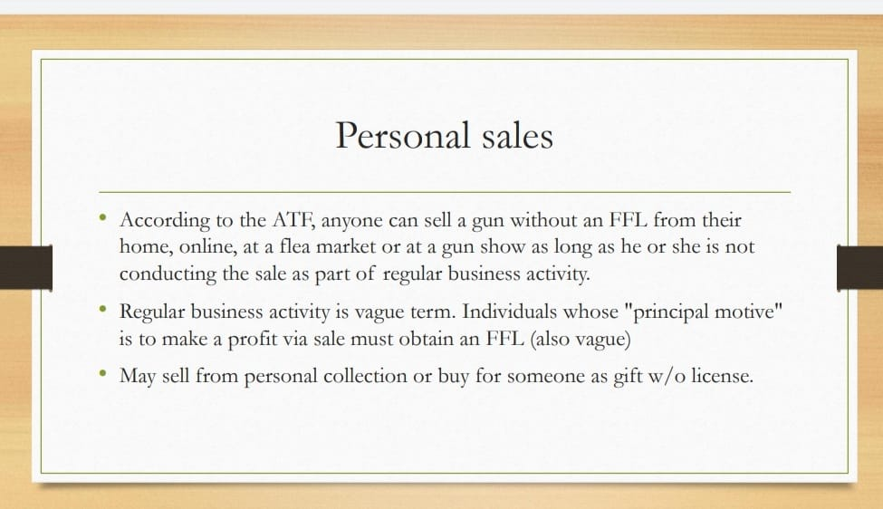

Mobile uploads
As a licensed gun dealer I know a thing or two about gun sales. ANYONE can buy a gun at a flea market or gun show. And auctioneers can sell guns right out of a house if they don't have their license. And, really, most of the deals just happen between two people in the parking lot.
Hartville Flea Market is the primary distributor of guns into Akron.
We need to close the loophole of gun shows and flea markets.